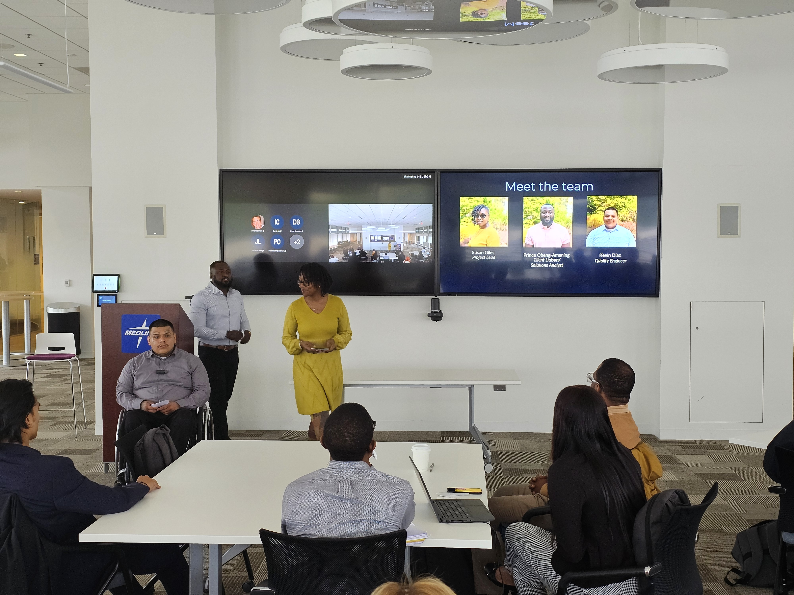
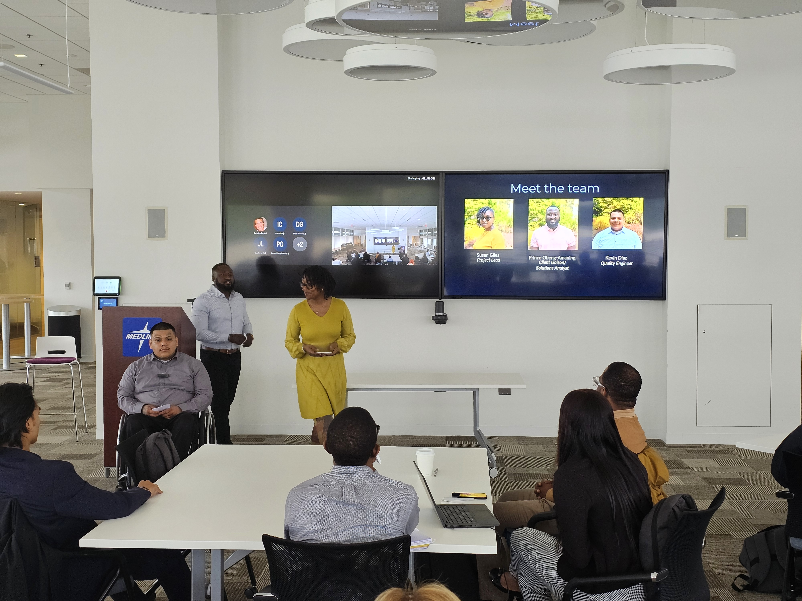

Technology
During my time at i.c.stars, I built a strong foundation in full-stack web development using the SERN stack (SQL, Express, React, Node). I learned how to structure databases, design responsive user interfaces, and integrate APIs to create functional, user-friendly applications. This included mastering version control with GitHub, managing code through branching and pull requests, and collaborating effectively on shared repositories. The experience taught me not just how to write code, but how to write maintainable, well-documented solutions that could be easily understood by other developers.
Beyond coding, I strengthened my technical problem-solving and debugging skills. Early in the program, I often struggled with tracking down bugs, but through persistence and the use of systematic troubleshooting methods—such as console logging, breakpoints, and peer code reviews—I became more confident in isolating and fixing issues efficiently. Geek Week further sharpened my abilities with SQL queries, Excel automation, and data analysis, while also improving my typing speed and efficiency with hotkeys, both of which made my workflow faster and more precise.
Another critical area of growth was learning to use technology as a business tool. Through hands-on projects, I became proficient in using collaboration platforms like Microsoft Teams, Planner, Zoom, and Google Drive for project management and communication. I also explored AI integration, building a simple chatbot to handle common client questions. These experiences expanded my understanding of how technology can directly solve business challenges and improve efficiency, preparing me to contribute meaningfully in professional technical environments
Picture Gallery
.jpg) 
